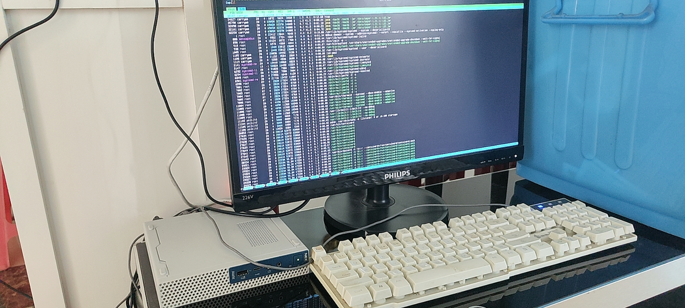
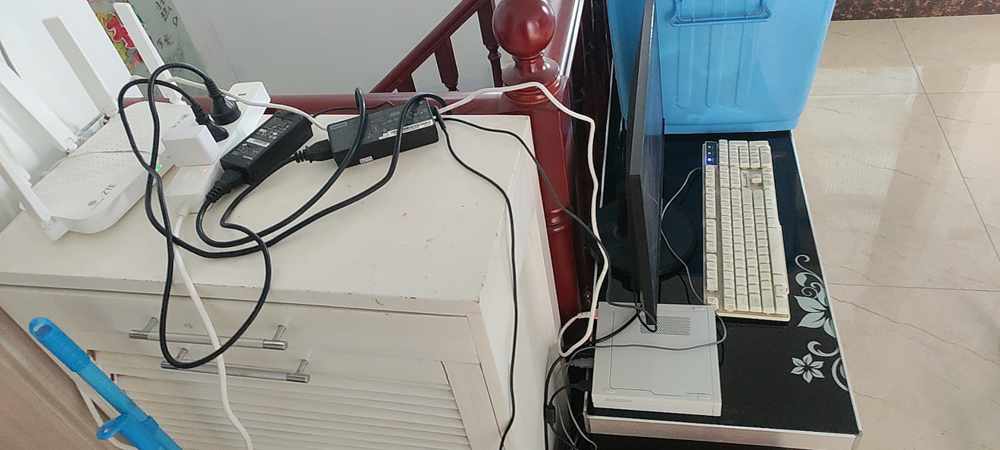
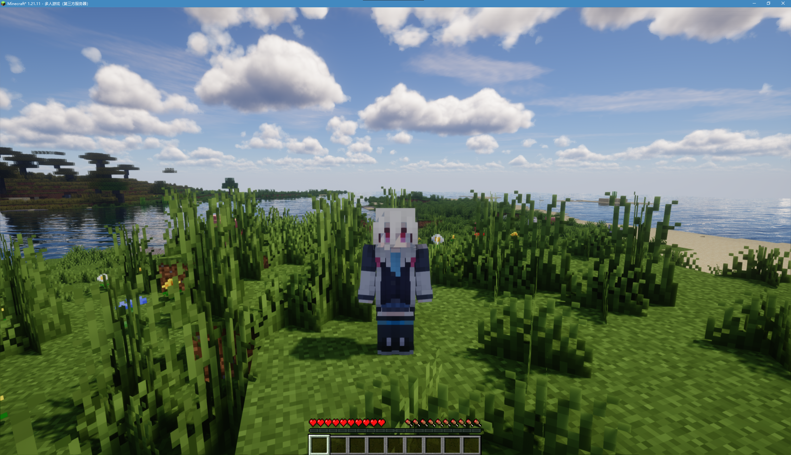

2026-08-23
今天内存到了，正式组好了主机，也同时配好了docker服务，之后就docker compose up -d，PaperMC，启动！
说起来，本来以为今天收官之日，要装一大堆服务，创建一大堆配置文件，会有极其繁杂的服务器debug环节，但好像并没有，一方面得益于docker这东西的伟大——写一个compose.yml然后就直接开了，不用折腾依赖和版本啥的。
于是呢，在配好mc和frp之后，carryws.xyz:25565就可以用了，最重要的，这个服务器有一个这样有标识的域名，而不是frp啥啥啥或者一长串ip地址，显得很有格调。（？）
现在这里的服务器是这样


当然，这台服务器配置其实很有限。i5-8100T CPU，内存是8G，也没有显卡，对于开mc服务器来说，只能做跟朋友一起玩玩的小服，所以我把服务器设置了最多6人（毕竟我确实没啥朋友）。

找了个还可以的种子，然而现在的模式还是原版的纯生存——这样对于任何人都没有限制，甚至比2b2t这种疯狂的服务器还疯狂（毕竟没有排队系统
（不过最多6个人进服...也不会有那么疯狂）
好的不说了，准备去搞astrbot和napcat，到时候我群的人机就能玩了（）